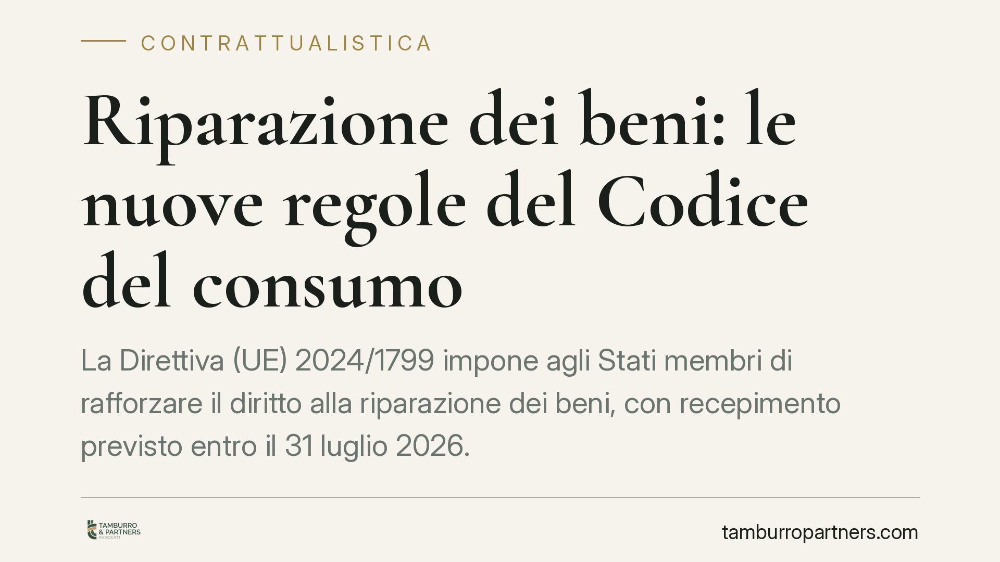

Riparazione dei beni: le nuove regole del Codice del consumo
La Direttiva (UE) 2024/1799 impone agli Stati membri di rafforzare il diritto alla riparazione dei beni, con recepimento previsto entro il 31 luglio 2026. In Italia l'attuazione incide sulla disciplina della garanzia di conformità contenuta nel Codice del consumo. Vediamo cosa cambia, con una premessa di metodo sugli estremi del provvedimento attuativo, da verificare.

Premessa sugli estremi del provvedimento
La Direttiva (UE) 2024/1799 fissa al 31 luglio 2026 il termine per il recepimento negli ordinamenti nazionali. È quindi plausibile un decreto legislativo attuativo italiano in questo arco temporale.
Gli estremi esatti del decreto di recepimento (numero, data, pubblicazione in Gazzetta Ufficiale) vanno però confermati sulle fonti ufficiali prima di ogni citazione puntuale. Consigliamo di verificarli su Normattiva o sulla G.U. telematica, evitando di dare per acquisiti riferimenti non consolidati.
Inquadramento normativo
La cornice di partenza resta la garanzia legale di conformità disciplinata dagli artt. 128 e seguenti del Codice del consumo (D.lgs. 6 settembre 2005, n. 206), come riformati dal D.lgs. 170/2021 in attuazione della Direttiva (UE) 2019/771. Questa garanzia tutela il consumatore per i difetti di conformità del bene e si distingue dalla garanzia commerciale (o convenzionale), che è un impegno aggiuntivo e volontario assunto dal venditore o dal produttore.
La Direttiva (UE) 2024/1799 opera su due piani. Da un lato, rafforza il rimedio della riparazione all'interno della garanzia legale. Dall'altro, introduce un obbligo autonomo di riparazione a carico del produttore, che prescinde dalla sussistenza di un difetto di conformità e opera anche dopo la scadenza della garanzia legale.
L'obbligo autonomo non riguarda ogni bene, ma le categorie merceologiche individuate dall'allegato della Direttiva. Si tratta, in sostanza, di prodotti già soggetti a requisiti di riparabilità in forza della normativa europea sulla progettazione ecocompatibile (quadro Ecodesign). L'elenco è destinato ad ampliarsi nel tempo con l'aggiornamento dei relativi regolamenti di prodotto.
Implicazioni pratiche
Le conseguenze variano a seconda del ruolo.
Per i venditori. La riparazione si consolida come rimedio prioritario a fronte di un difetto di conformità, salvo i casi in cui risulti sproporzionata rispetto alla sostituzione. Occorre rivedere le procedure di gestione dei reclami e il coordinamento con produttori e centri di assistenza.
Per i produttori. È il soggetto più inciso. Per i beni rientranti nell'allegato scatta l'obbligo di riparare su richiesta del consumatore, entro un termine ragionevole e a un prezzo non dissuasivo. A questo si affiancano obblighi informativi, la messa a disposizione di ricambi e informazioni tecniche, e il divieto di clausole o tecniche che ostacolino la riparazione indipendente.
Per i consumatori. Si amplia la possibilità di ottenere la riparazione anche oltre la garanzia legale, con un canale diretto verso il produttore e strumenti informativi (come il modulo europeo sulle informazioni di riparazione) che consentono di confrontare costi e tempi.
La durata della disponibilità dei ricambi e i tempi ragionevoli di riparazione non sono fissati in modo uniforme dalla Direttiva: dipendono in buona parte dai regolamenti di prodotto settoriali. Anche qui, i parametri temporali vanno riscontrati sulla fonte specifica applicabile al singolo bene.
Cosa fare in concreto
- Verificare gli estremi del decreto di recepimento sulle fonti ufficiali (Normattiva, G.U.) prima di adeguare contratti e procedure interne.
- Mappare i prodotti del proprio catalogo per individuare quali rientrano nell'allegato della Direttiva (UE) 2024/1799 e nei regolamenti Ecodesign collegati.
- Rivedere le condizioni generali e le clausole sulla garanzia, distinguendo con chiarezza garanzia legale (artt. 128 ss. Cod. cons.) e garanzia commerciale.
- Organizzare la filiera dei ricambi e dell'assistenza tecnica, definendo tempi e costi di riparazione documentabili per ciascuna categoria di prodotto.
- Aggiornare l'informativa verso il cliente, predisponendo i moduli informativi sulla riparazione e i canali di contatto previsti dalla nuova disciplina.
Conclusioni
La riforma sposta il baricentro dal consumo alla durata del bene, con oneri nuovi soprattutto per i produttori. L'adeguamento richiede un intervento coordinato su contratti, procedure e logistica dei ricambi. Consigliamo di avviare per tempo la ricognizione interna, parametrandola alla categoria merceologica e alle fonti applicabili, una volta consolidati gli estremi del provvedimento di recepimento.
---
Contributo informativo a cura di Tamburro & Partners Avvocati - Avv. Giuseppe Tamburro. Non costituisce parere legale.
Ogni contratto ha il suo equilibrio.
Se vuoi una revisione delle clausole o una redazione su misura, scrivi allo studio. Ti rispondiamo entro un giorno lavorativo.